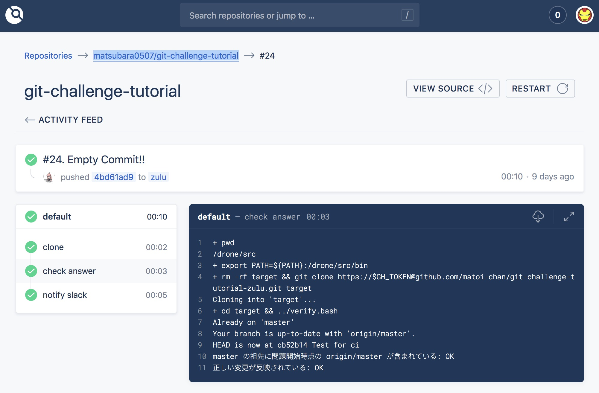

Drone 1.0 を GCE 上に構築する
先月ついに Drone CI のバージョン1.0がリリースされました(rc でも無い方)． まだドキュメントの方が追いついてないところもありますが，これで大手を振って本番導入できますね！
で，別に本番導入したわけじゃ無いんですけど，とあるイベントで Drone CI を使いたかったので GCE 上に立てました． 本記事はそのメモ書きです．
Drone CI
Jenkins のような OSS な CI/CD プラットフォーム． 使い勝手的には TravisCI や CircleCI に近く、.drone.yml という設定ファイルにパイプラインを使って記述する:
kind: pipeline
steps:
- name: test
image: node
commands:
- npm install
- npm test
services:
- name: database
image: mysql
ports:
- 3306Go言語製で，Docker との親和性がかなり高いという特徴を持っている． また，Drone Cloud というクラウドサービスも提供されているので，とりあえず試したい人はぜひ．
Drone on GCP
Drone 自体は Docker で起動できる(公式ドキュメント)． docker-compose を次のように記述することで簡単に起動可能だ:
version: '2'
services:
drone:
image: drone/drone:1
ports:
- 8000:80
- 443:443
volumes:
- /var/run/docker.sock:/var/run/docker.sock
- /var/lib/drone:/data
restart: always
environment:
- DRONE_GITHUB_SERVER=https://github.com
- DRONE_GITHUB_CLIENT_ID=${DRONE_GITHUB_CLIENT}
- DRONE_GITHUB_CLIENT_SECRET=${DRONE_GITHUB_SECRET}
- DRONE_AGENTS_ENABLED=true
- DRONE_RPC_SECRET=${DRONE_SECRET}
- DRONE_SERVER_HOST=${DRONE_HOST}
- DRONE_SERVER_PROTO=https
- DRONE_TLS_AUTOCERT=true
agent:
image: drone/agent:1
restart: always
depends_on:
- drone
volumes:
- /var/run/docker.sock:/var/run/docker.sock
environment:
- DRONE_RPC_SERVER=http://drone
- DRONE_RPC_SECRET=${DRONE_SECRET}
- DRONE_RUNNER_CAPACITY=2
- DRONE_RUNNER_NAME=${HOSTNAME}今回はこれを GCE 上でやることにした(GKE を試そうとも思ったが，まだ時期尚早って感じだったのでやめた)．
GCPでの準備
HTTPS 通信をやりたいのでドメインの取得をし，HTTP(S) LB と Managed SSL を使って簡単に証明書を発行することにした． この仕組みは下記の記事を参考にした:
β版だったためか，ところどころ違った気がするけど概ね記事の通りできた．
- GCEインスタンスを立てる
- スペックは
n1-standard-1（vCPU x 1、メモリ 3.75 GB）+ 10GB diskにした - HTTPアクセスを許可しておく
- スペックは
- インスタンスグループを作成
- HTTP(S) LB を作成
- バックエンド: (2)のインスタンスグループを選んで他はデフォルト値
- ホストとパスのルール: 特になし
- フロントエンド: エフェラメルIPでHTTP/HTTPSの2つを作成
- DNSのAレコードを作成
- 有効化されるのに長いと1時間ぐらいかかる
ドメインは Google Domain で取得したのだが，そっちの DNS 設定を切っておくのを忘れて有効化に失敗していた．
Drone の準備と起動
上記手順の(1)で以下のプログラムをインストール:
dockerdocker-composenginx
nginx の設定は雑に次のような感じ(参考):
server {
listen 80 default_server;
listen [::]:80 default_server;
server_name _;
return 444;
}
server {
listen 80;
server_name [(4)で設定するドメイン];
if ($http_x_forwarded_proto = 'http') {
return 301 https://$server_name$request_uri;
}
location / {
proxy_set_header Host $http_host;
proxy_set_header X-Real-IP $remote_addr;
proxy_set_header X-Forwarded-For $proxy_add_x_forwarded_for;
proxy_set_header X-Forwarded-Proto $scheme;
proxy_pass http://localhost:8000;
proxy_redirect off;
proxy_buffering off;
chunked_transfer_encoding off;
}
}これで (4) で設定したドメインの HTTPS 通信のみ許可するようになった． あとは適当なところで docker-compose up -d とすれば良い．

おまけ
Drone 起動時の環境変数
このあたりのを適宜使った:
- DRONE_USER_FILTER
- 認証後に閲覧できるユーザーを絞る
- ただし Public は誰でも見れる(はず)
- ちなみに Internal はここで指定したユーザー全員が見れる
- DRONE_USER_CREATE
- Admin ユーザーみたいな感じ
- DRONE_LOGS_DEBUG,DRONE_LOGS_TRACE
- この二つをオンにしておくと
docker logsでだいたいログを追える
- この二つをオンにしておくと
Drone の情報
冒頭で述べた通り，Drone の公式情報は綺麗にまとまってるとは言い難い． 基本は以下の公式ドキュメント:
.drone.yml の書き方はここにまとまってるので Drone CI を使うってだけならここで概ね問題ないでしょう． API を使ったり，drone-cli を使ったり，コンテナ起動時の設定を調べたりは情報が足りない時がちょくちょくある． Drone は GitHub Issue の他に Discourse というサービスを使っている:
具体的なエラーなんかは StackOverflow よりここを検索した方が見つかる． またチャットサービスとして Gitter も用意しているので，そこに聞きに行ってもいいかもしれない:
まぁあとは OSS なので直接コードを観に行けばだいたい仕様はわかる． 特に，API に関する情報は 0.8 以前の古いものしかなく，Haskell の Drone クライアントを作るときは直接ソースコードを見ていた:
- drone/drone - GitHub:
handler/apiとか見ると良い - drone/drone-go - GitHub: Drone API の Go クライアント